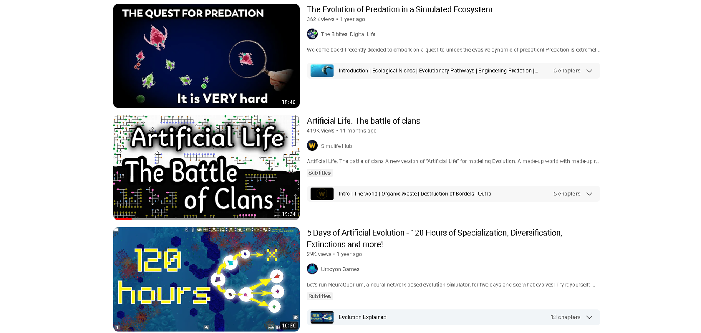
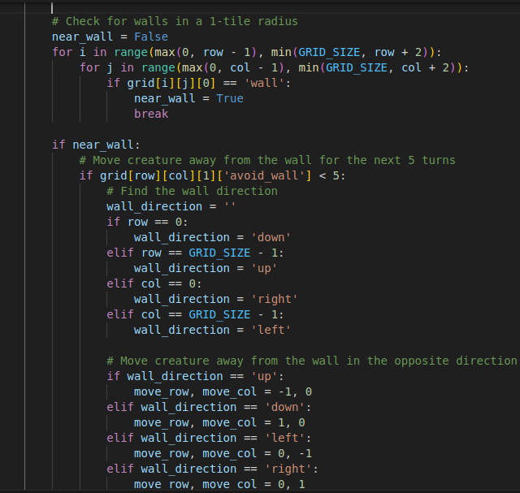

I have recently been obsessed with these evolution simulation on YouTube. If you haven't watched any I would highly recommend it.
Basically by programming “creatures” with a set of rules based on there “species” and displaying them in a graphical representation. Different content creators do this in all kinds of different ways.
I thought it would be a fun project for me to try. I have always been interested in evolution and genomes, and lets be honest, who doesn’t want to play god and create their own simulation.
My first step was to decide on how I would graphically represent my world. I have recently been trying my hand at pixel art.
ps. I'm not very good. This was supposed to be an apple, it's now a tomato.
Although it did get thinking about a grid based system for my world, which lead me to a crude idea of creating creatures stored as 3 main values:
Position - A grid is great because I could use numeric value to represent X and Y [-25, 13]
Age - Because nothing escapes time.
DNA - This is a tough one that I am still trying to figure out. I have a few ideas at the moment, im just not sure which would be best. My first idea was to have the genome be a string of characters where each letter corresponds to a value. A = 100, B = 127, C = 187, D = 134 and reproduction could be handled like this:
Creature Genome Structure:
- Initial Generation:
- Creature A has genome: ABCCD (Speed: A, Social: B, Aggression: C, Immunity: D, etc.).
- Creature B has genome: BCADD (Speed: B, Social: C, Aggression: A, Immunity: D, etc.).
- Crossover:
- Choose a random crossover point (e.g., at the 3rd position)
- Creature A's genome before crossover: ABC + CD
- Creature B's genome before crossover: BCA + DD
- Combine the parts after crossover:
- Child's genome: ABC + DD
- Mutation (Optional):
- Introduce a chance for mutations in the child's genome. For example, randomly change one or more letters:
- Child's genome after mutation (with a 10% mutation rate): ABD + DD
- Create Child:
- The child creature is born with the resulting genome:
- Child's genome: ABDDD (Speed: A, Social: B, Aggression: D, Immunity: D, etc.).
World Rules:
- Plant - Green Dot
- Cannot move
- Will die after a random age 5-7
- Will drop seeds over time around it if there is free space
- Can be eaten by creatures (will disappear)
- 1 age every 5 turns
- Seed - Yellow Dot
- Will drop from plants over time
- Will grow to a plant in 2 turns
- Creature - Red Dot
- Will move every turn in search of food
- Can see a 2-tile radius
- Will move towards food if it 'sees' it
- Will die after a random age between 80-90
- Will die if food is empty
- Can reproduce after age 20 if food is full
- Will grow 1 age every 5 turns
- Can move 1 or 2 tiles every turn
- Food will decrease each turn and increase when a plant is eaten
Current Band-Aid for Edge Issue:
I ran into a few issues along the way, but none that were more annoying than trying to get the creatures to not keep walking into the edge of the map. I tried a few different methods, but nothing has been a great fix. This is the current Band-Aid:
This issue has lead me to want to learn and incorporate more bias into the creatures, maybe eventually controlling the creatures entire decisions based on weights and bias. It is defiantly something I need to research more.
I gave the creatures a food and age counter that displays on the screen, and a one to keep track of the days. I haven’t yet introduced the DNA to the creatures yet, so they just make an exact copy of themselves. With all of that in place it was time to test the world here is the first stage:
Code: github.com/windyGarlic/life.py
Conclusion
I definitely have a lot more to do before I can say i have made life, but i think this is a good start. This project has made me a better programmer and i look forward to evolving along with these creatures as i continue to work on the project.